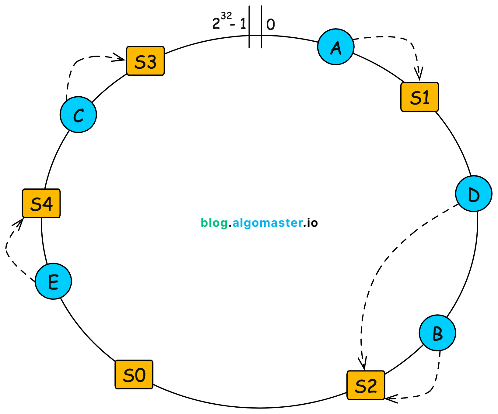

개요
시스템 설계는
한 명의 사용자를 지원하는 단순한 구조에서 시작해, 수백만 사용자를 감당할 수 있는 구조로 확장하는 과정이다.
이 글에서는 대규모 시스템 설계의 핵심 요소들을 단계적으로 정리한다.
어떤 데이터베이스를 사용할 것인가?
비관계형 DB(NoSQL)는 언제 선택하는가?
1. 아주 낮은 응답 지연 시간이 필요한 경우
채팅 메시지 조회, 타임라인 피드, 세션 조회와 같이
짧은 지연 시간(latency)이 중요한 서비스에서는 NoSQL이 적합하다.
-
RDBMS는 JOIN, 인덱스 탐색, 트랜잭션 처리 비용이 존재
-
NoSQL은 Key → Value 조회 중심 구조
-
디스크 I/O를 최소화하고, 메모리 기반 접근에 최적화
2. 직렬화된 데이터만 저장하면 되는 경우
객체를 JSON 등의 형태로 직렬화하여 그대로 저장할 수 있다면
관계형 데이터 모델이 반드시 필요하지 않다.
-
객체 → JSON → 그대로 저장
-
데이터 간 관계 해석 불필요
-
예: JSON, YAML, XML 형태의 데이터
3. 아주 많은 데이터를 저장해야 하는 경우
-
RDBMS는 수직 확장에 한계가 있음
-
NoSQL은 처음부터 **수평 확장(샤딩)**을 전제로 설계됨
수직적 규모 확장 vs 수평적 규모 확장
수직적 확장(Scale-up)은 하드웨어 성능을 높이는 방식이지만
자동 복구(failover)나 다중화(redundancy)에 한계가 있다.
1. 웹 계층
로드 밸런서
-
여러 웹 서버에 트래픽을 분산
-
클라이언트는 웹 서버가 아닌 로드 밸런서에 접속
-
요청 흐름
Client → Load Balancer → Web Server
2. 데이터 계층
일반적으로 주(master) – 부(slave) 구조를 사용한다.
-
master: 원본 데이터 저장
-
slave: master 데이터의 사본 저장
2.1 장점
-
처리량 증가
-
쓰기: master
-
읽기: slave
-
-
안정성
- master 장애 시에도 데이터 보존
-
가용성
- 한 DB 서버가 다운되어도 서비스 지속 가능
하지만 실제 프로덕션 환경은 단순하지 않다.
-
slave 데이터가 최신 상태가 아닐 수 있음
-
누락된 데이터는 별도 복구 스크립트로 보완해야 함
이러한 문제를 완화하기 위해
쓰기 작업을 단일 서버에 의존하지 않는 구조가 등장했다.
“어차피 replica가 최신이 아닐 수 있다면,
아예 모든 노드를 쓰기 가능하게 만들자”
-
다중 마스터(Multi-Master)
-
원형 다중화(Circular Replication)
다중 마스터(Multi-Master)
모든 노드에서 읽기와 쓰기가 가능하다.
왜 다중 마스터를 사용하는가?
-
고가용성
- 특정 노드에 쓰기 의존 X
-
지리적 분산
- 한국 / 미국 / 유럽 등 가까운 DB로 쓰기 가능
-
쓰기 부하 분산
- 단일 master 병목 제거
발생하는 문제
-
쓰기 충돌
-
자동 해결이 어려움
충돌 해결 방식 예시
-
Last Write Wins (타임스탬프 기준)
-
노드 우선순위 기반
Client → Master A (write) Client → Master B (write) Master A ↔ Master B (서로 복제)
원형 다중화(Circular Replication)
-
모든 DB가 마스터
-
원형 구조로 서로 복제
Master A → B → C → A
특징
-
중앙 master 없는 대칭 구조
-
노드 추가가 비교적 단순
-
특정 DB 의존성 없음
단점
-
무한 복제 루프 위험
-
운영 난이도 높음
-
장애 원인 추적 어려움
-
최신 데이터 판단 어려움
-
캐시(Cache)
애플리케이션 성능은
DB를 얼마나 자주 호출하느냐에 크게 좌우된다.
캐시 계층
대표적인 전략은 읽기 주도형 캐시(Read-Through) 이다.
다른 캐시 전략
-
Write Through
- 쓰기 시 캐시와 DB 동시 반영
-
Write Behind
-
캐시에 먼저 저장
-
DB 반영은 비동기
-
읽기 주도형 캐시 동작
-
캐시에 데이터가 있으면 바로 반환
-
없으면 DB 조회
-
조회 결과를 캐시에 저장 후 반환
캐시 사용 시 유의사항
-
언제 적합한가?
- 갱신은 적고, 조회는 잦은 경우
-
만료 정책
- TTL이 길면 원본과 불일치 발생
-
일관성
- DB와 캐시 갱신이 단일 트랜잭션이 아닐 수 있음
-
장애 대응
-
단일 장애 지점(SPOF) 주의
-
분산 캐시 필요
-
-
데이터 방출 정책
- LRU, FIFO, LFU 등
실무에서 많이 쓰는 캐시 일관성 정책
Cache Aside + TTL
-
DB 업데이트
-
캐시 삭제
-
다음 조회 시 재적재
캐시 분산 정책
1. Client-side Hashing
-
클라이언트가 직접 캐시 노드 결정
-
단점: 노드 수 변경 시 키 대량 이동
nodeIndex = hash(key) % N
2. Consistent Hashing
-
노드 추가/삭제 시 일부 키만 이동
-
해시 링 기반 구조
해시 링 동작 흐름
-
해시 링 생성
-
서버를 해시하여 링에 배치
-
키를 해시
-
시계 방향으로 가장 가까운 서버 선택
-
노드 변경 시 일부 키만 이동

CDN(Content Delivery Network)
정적 콘텐츠 전송을 위한
지리적으로 분산된 캐시 서버 네트워크이다.
-
이미지, 비디오, CSS, JavaScript 등 캐싱
-
클라이언트 요청 시 CDN이 직접 응답
무상태(stateless) 웹 계층
웹 계층을 수평 확장하려면
상태 정보를 웹 서버에서 제거해야 한다.
- 사용자 세션 정보는 DB 또는 외부 저장소에 보관
메시지 큐(Message Queue)
메시지 큐는 다음 특성을 가진다.
-
무손실(durability)
-
비동기 통신
큐에 저장된 메시지는 소비자가 처리할 때까지 안전하게 보관된다.
장점
-
서비스 간 느슨한 결합
-
비동기 처리
-
장애 격리
DB 규모 확장
데이터 증가 → DB 부하 증가 → 확장 필요
-
수직 확장: Scale-up
-
수평 확장: 샤딩
샤딩
-
대규모 DB를 여러 샤드로 분할
-
모든 샤드는 동일한 스키마
-
데이터는 중복되지 않음
샤딩 주의사항
-
재샤딩(Resharding)
-
데이터 쏠림 → 샤드 소진
-
Consistent Hashing으로 완화
-
-
유명인사(Celebrity) 문제
-
특정 키에 트래픽 집중
-
전용 샤드 할당 또는 추가 분산 필요
-
-
조인 문제
-
샤드 간 조인 어려움
-
비정규화로 해결
-
백만 사용자, 그리고 그 이상
시스템 규모 확장은
한 번으로 끝나는 작업이 아니라, 지속적으로 반복되는 과정이다.